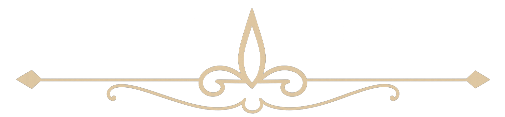

George R.R. Martin ha declarado en varias ocasiones que una de sus
grandes influencias a la hora de escribir las novelas de
Juego de Tronos fue la obra de J.R.R. Tolkien,
El Señor de los Anillos. De Tolkien tomó varios elementos
para construir el universo, las casas nobles y los paisajes de
Poniente.
Tanto es así que Martin pidió que hubiera una referencia directa al
universo de Tolkien en la serie. Si observamos con atención el
famoso Trono de Hierro, lleno de espadas fundidas,
podemos notar que una de ellas es Glamdring, la
espada de Gandalf.
Detalle de la espada Glamdring de Gandalf oculta en el Trono de
Hierro.

2. El verdadero muro
George R.R. Martin no solo se inspiró en la fantasía para construir
su mundo, sino también en lugares reales del mundo
medieval. Uno de los ejemplos más claros es el enorme
Muro que separa a la civilización de los salvajes
en el norte de Poniente, custodiado por la Guardia de la Noche.
Este colosal muro, que en la serie está hecho de hielo, está
inspirado en una estructura real: el
Muro de Adriano, una antigua construcción romana
situada en el norte de Inglaterra. Martin visitó este lugar y lo
describió como una experiencia muy poderosa que lo ayudó a imaginar
lo que sería custodiar el fin del mundo.
Concretamente, el Muro de Adriano, unja antigua construcción
defensiva militar, que se encuentra en la isla de Britania, y que
fue levantado por el Emperador romano Adriano con el fin de
defenderse de los británicos en su conquista de la isla. El muro se
extendía durante 117 kilómetros, y tenía una altura de unos 4 metros
y casi 3 metros de grosor. En la actualidad, es una especia de
frontera simbólica entre Escocia e Inglaterra.
El Muro de Adriano, la inspiración real del Muro en Poniente.
3. Una peluca platina
Uno de los rasgos más icónicos del personaje de
Daenerys Targaryen, interpretada por Emilia Clarke,
es su larga y brillante cabellera platina. Este look se volvió una
verdadera tendencia en la vida real durante la emisión de la serie.
Sin embargo, la actriz es castaña natural y no se tiñó el pelo
durante la mayoría de la serie. En su lugar, usó pelucas
especialmente diseñadas para lograr ese aspecto tan característico.
Como homenaje a su personaje, Emilia Clarke decidió teñirse
realmente de color platino
para la octava y última temporada.
Emilia Clarke teñida de platino para interpretar a Daenerys en la
última temporada.
4. Dos idiomas creados especialmente
En Juego de Tronos aparecen dos lenguajes ficticios
creados exclusivamente para la serie. El primero es el
dothraki, desarrollado por el lingüista David J.
Peterson. Tiene influencias de idiomas como el ruso y sonidos
similares al árabe, pero su estructura recuerda más al
mongol. Actualmente cuenta con más de
2.700 palabras.
Aprenderlo no es tarea sencilla: el actor
Jason Momoa (Khal Drogo) dedicó un mes entero a
perfeccionar su pronunciación para sus escenas.
El segundo idioma es el alto valyrio, también
creado por Peterson. Este lenguaje lo utiliza principalmente
Daenerys Targaryen, y está basado en el latín con
ciertos toques de lenguas de Europa del Este. Tal fue su popularidad
que hoy puede estudiarse en la plataforma Duolingo.
El idioma Alto Valyrio puede estudiarse oficialmente en Duolingo.
5. Los tres dragones
Los tres dragones de Daenerys Targaryen son unas de
las criaturas más emblemáticas y visualmente impactantes de
Juego de Tronos. Nacen de las llamas junto a su madre en
una escena icónica al final de la primera temporada.
Daenerys los nombra Rhaegal,
Viserion y Drogon. Estos nombres
no fueron elegidos al azar: cada uno es un homenaje a personas que
marcaron profundamente su vida. Rhaegal honra a su
hermano Rhaegar Targaryen; Viserion, a su hermano
Viserys; y Drogon, al amor de su vida, Khal Drogo.
Drogon, Viserion y Rhaegal: los dragones de Daenerys y sus
significados personales.
6. El Fuego Valyrio y su inspiración histórica
El temido Fuego Valyrio es una de las armas más
devastadoras en Juego de Tronos. Este fuego mágico, de un
característico color verde brillante, es imposible de apagar con
agua y ha sido clave en batallas como la explosión del Gran Septo de
Baelor.
Lo más curioso es que está inspirado en una sustancia real conocida
como Fuego Griego, utilizada por el Imperio
Bizantino. Esta arma incendiaria era capaz de seguir ardiendo
incluso sobre el agua y se usó para defender ciudades y barcos.
Aunque su composición exacta sigue siendo un misterio, se convirtió
en una herramienta letal durante las cruzadas y asedios históricos
como el de Siracusa.
El Fuego Valyrio se inspira en el legendario Fuego Griego bizantino.
7. La gran Batalla de los Bastardos
La Batalla de los Bastardos, que enfrenta a Jon
Snow contra Ramsay Bolton, es considerada una de las secuencias más
impresionantes jamás vistas en la televisión. Su nivel de producción
fue colosal y marcó un antes y un después en la narrativa bélica en
pantalla chica.
El rodaje de esta batalla llevó 25 días completos,
contó con más de 500 extras,
60 caballos reales y un trabajo de
CGI que logró simular a más de
7.000 combatientes en pantalla.
Los showrunners de la serie confesaron que se inspiraron en
la Guerra Civil Americana para coreografiar el
caos, la desesperación y el enfrentamiento frontal que se ve en el
episodio.
La Batalla de los Bastardos, una de las escenas más épicas de la
serie.